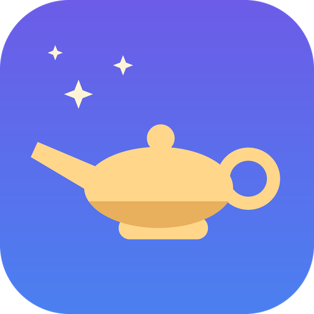
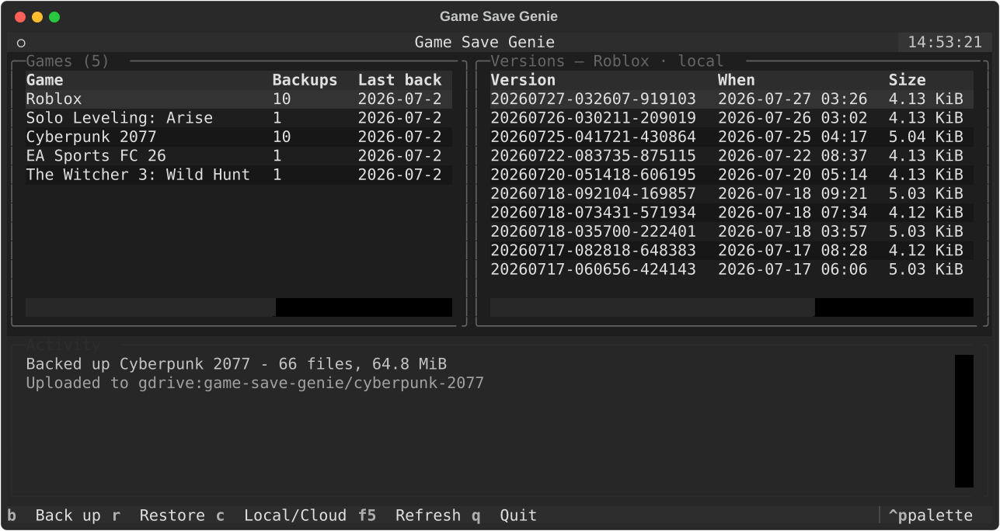

Steam Cloud for the games that don't have it.
Automatic, versioned, self-hosted cloud save sync for PC games — Hydra and manual installs, GOG offline installers, repacks, emulators. Anything a launcher isn't protecting. Your saves, your cloud, no subscription.
Per-user install, no admin needed. Linux supported (beta).

gsg — arrow to a version, press r to restore. No ids to copy.
The problem
One corrupted file, one Windows reinstall, one “wait — which PC did I play on last?” and dozens of hours are gone. Paid save-sync services cap your history at a couple of backups and delete everything when you stop paying.
Game Save Genie runs quietly in the background and gives those games what the launchers give theirs. Steam, Epic and Xbox titles are detected and skipped automatically — they already sync their own saves.
Setup
Grab the installer, or the portable gsg.exe. Ludusavi and rclone are
downloaded automatically the first time they're needed.
Run gsg. Google Drive and OneDrive open a browser — sign in, click
Allow. Or point it at any S3 bucket, or your own server.
gsg auto starts at logon and watches for games. Backups happen when a
game closes and every 10 minutes while it runs.
What it does
Save locations for 19,000+ titles via the open-source Ludusavi database, plus process watching so it knows when you're actually playing.
gsg add --path backs up any folder — RetroArch, PCSX2, Dolphin,
memory cards, save states — so games Ludusavi doesn't know are covered.
Immutable, checksummed snapshots. Roll back to any point, not just to “last backup”.
Google Drive, OneDrive, any S3 bucket, or anything rclone speaks. Delta uploads mean an unchanged 40 MB save is never re-sent.
Restore on any machine, with paths remapped automatically when a save was recorded under a different Windows username.
A tray icon shows at a glance whether your saves are safe, and goes red with a notification if a backup or upload fails.
Safety
A backup tool that corrupts a save is worse than no backup tool. These rules are enforced in shared code, so every command and the dashboard all obey them.
C:\Users\alice\… restore correctly for bob.Alternatives
| Game Save Genie | Ludusavi | Game Backup Monitor | Hydra Cloud | |
|---|---|---|---|---|
| Auto-backup on game close | Yes | No | Yes | Yes |
| Periodic backup during play | Yes | No | Yes | No |
| Direct cloud upload, delta | Yes | Yes | Needs a sync folder | Their servers |
| Cross-machine path remapping | Yes | No | No | Yes |
| Version history | Per session | Yes | Yes | 2 per game |
| Storage you own | Yes | Yes | Sync folder | Their servers |
| Free | Yes | Yes | Yes | Subscription |
Game Backup Monitor is a good tool that also auto-backs-up and auto-restores — its difference is cloud: “cloud” there means pointing backups at a separate folder-sync client. Ludusavi is an excellent backup engine, and Game Save Genie is built on it. Hydra Cloud caps each backup at 500 MB and deletes saves 7 days after a subscription ends. Comparison reflects mid-2026 — check each project for current features.
Get it
Per-user, no admin. Adds gsg to your terminal and a Start Menu entry.
Removes itself cleanly.
Python 3.10+, Windows or Linux.
pip install git+https://github.com/Vasanthdev2004/Game-Save-Geniegsg # the dashboard — browse versions, restore
gsg auto --install # start at logon, hidden, with a tray icon
gsg status # per-game overview and storage
gsg backup # back up now
gsg pull --all # catch this machine up from the cloudStatus: single-machine backup on Windows is stable and used daily. Cross-machine sync and Linux/Steam Deck support are beta — solid in testing, but not yet battle-tested across many setups. Keep a second copy of anything precious for now, and please file an issue with anything you hit.
Questions
In your own cloud storage, as ordinary files you can open with anything. No
accounts, no servers of ours, no telemetry — gsg only ever talks to
the remote you configured and to GitHub, to download Ludusavi and rclone.
Your saves are still sitting in your Drive or bucket. Nothing expires and nothing is locked in — Ludusavi can restore its own backup format directly.
No. Games belonging to Steam, Epic and Xbox are detected and skipped, because those launchers already sync their own saves. It only handles what nothing else is covering.
Yes. There's a docker compose up save server that works with any
S3-compatible store — MinIO, Garage, TrueNAS — with per-friend accounts, so your
saves never leave your network.
Beta, and testers are genuinely valuable. The full pipeline runs on Linux, with a
systemd user service, notify-send notifications, and Steam detection
across native, Deck and Flatpak paths. What it needs now is real-world mileage.